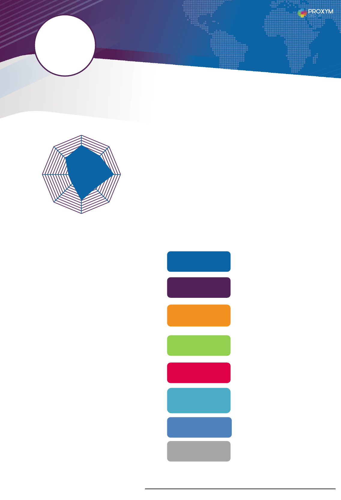
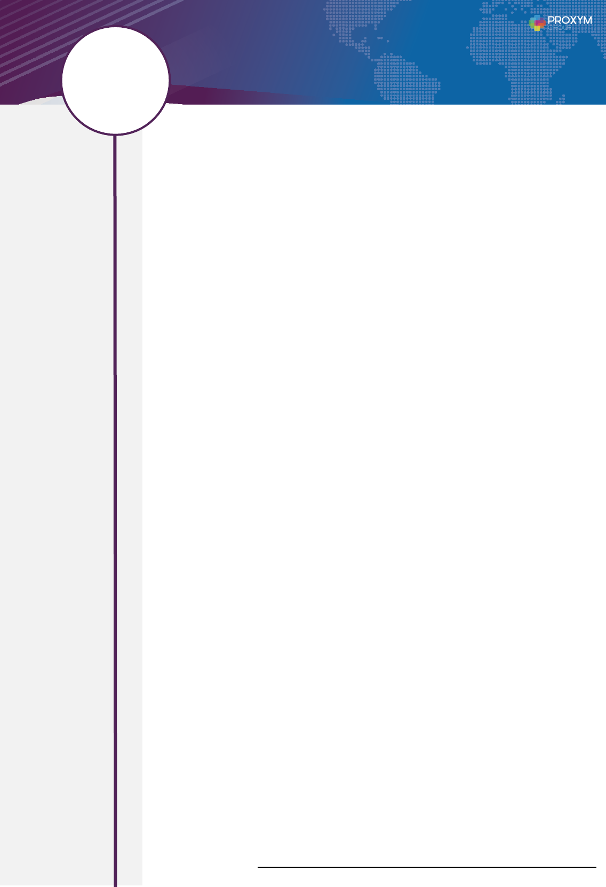

§ Veilletechnologique
§ Lecture
§ Cinéma
FORMATIONS
COMPÉTENCES CLÉS
Anglais
LANGUES
LOISIRS
A PROPOS DE OUSSAMA…
Analyse et
conception
Architecture
technique
Dév. et tests
Audit et recom.
tech.
Veille et innov.
technique
Pilotage projet
Maquettage
Animation et
communication
• 2012-2015 – DiplômeNationale
d’ingénieurengénie
Télécommunication–ENET’COM
• 2008-2012 – CyclePréparatoire
IPEIManar
• 2008 – BaccalauréatMathématique
Développeurfront-end,j'aitravaillésurdessujets
passionnantsetchallengeantautourdestechnologies
Front-enddanslesdomainedebancaire,serviceRHet
Télécommunicationetlesapplicationmobiled’entreprise.
Celafait5ansquej’intervienssurdesprojetsentantque
SolutionBuildercequim'apermisd'acquérirdebonnes
compétencesdanslaconception,l'architecture,le
développementenéquipe,ainsiquesavoirêtreàl’écoute
duclientdurantlesdifférentesétapedesprojets,
s’appuyantsouventsurlaméthodologieAgile
Aujourd’huimonrôledeleaddéveloppeurmepermetde
continuerdem’épanouirautraversdenouveauxdéfis
humainsettechnique.
Méthodes
Développement
Méthodes
UML,Merise,DesignPatterns,
Workflowpatterndesign
Linux,Windows
Agile(Scrum)
HTML5/CSS3/JavaScript,Angular,
AngularJS,BackboneJS,jQuery,
jQuery-Mobile,ApacheCordova,
IBMWorklight/Mobilefirst,JAVA.
Serveurs
d’application
Systèmes
WebSphere,ApacheTomcat
BDD et cache
MySQL,Oracle,SQLServer
Intégration
continue et
versionning
GIT,GitLab,Sonar,Maven
Outils de
développement
Eclipse,
Intellij
ContactProxym–AdelNAILI–0635468426
Français
6/10
9/10
OL
5ansd’expérience
INGÉNIEUR DÉVELOPPEMENT FRONT-END
Agile(Scrum)

PARCOURS PROFESSIONNEL
Teamleader–Proxym-IT
Eronde – Air Liquide – Paris
MigrationdeBackendd’uneapplicationjavaversAWSserverlessavecnodejsentypescript.
Mission
ü Participationàlamiseenplacedel’architecturetechniqueetlechoixdesservicesAWS.
ü ConceptiondelabasededonnéDynamoDB.
ü DéveloppementdumoduleauthentificationpourservircommeunmoduleSSOpour
plusieursapplicationsairliquide.
ü Participationaudéveloppementdesfonctionnalitésl’application.
ü AssurélamigrationdesdonnédelabasededonnémySqlversDynamoDB.
Environnement Technique
Nodejs,Typescript,AWS,serverless(Lambda,APIGateway),CloudFormation,DynamoDB,
AWSCognito,GitLab.
TeamLeader–Proxym-IT
Banckerise – Proxym-it
Développementd’unproduitbancaire.
L’applicationestuneapplicationgénériquequisertcommeproduitbancaire.
L’applicationPermet:
•L’installationdesmodulesfonctionnellesselonlebesoindeclient(Gestiondescomptes,
Virement,GestionRôle….)
•L’activationdes«Challenge»desécuritéàpartirdeBackofficepoursécuriserlesservices
(OTP,SecurityQuestion…)
•GénérationdemoduleauthentificationselonlebesoindeclientetàtraversleCLI
customisé.
Mission
ü Participationauxréunionsdespécificationfonctionnelles.
ü Développementdesmodulescoredel’application.
ü Développementd’unmoduleconfigurablepourl’authentificationquisupportel’Oauth2,
passewordflow.
ü Développementdemoduleconfigurablepourlasécuritéquipermetd’activéplusieurs
mesuredesécuritépourlesservicesdel’application(modules):OTP,Multifacteur
authentification,questiondesécurité.
ü Customisationd’AngularCLIenutilisantAngularSchematicspourdévelopperun
générateurpersonnalisédesmodules.
Environnement technique
Angular6,AngularSchematics,AngularLibrairie,ArchitectureOnion.
Janvier 2019 à
Février 2019
Conception et
Développement
5ansd’expérience
INGÉNIEUR DÉVELOPPEMENT FRONT-END
OL
Mars 2019 à
Juin 2019
Conception et
Développement
ContactProxym–AdelNAILI–0635468426

PARCOURS PROFESSIONNEL
Teamleader–Proxym-IT
Carrefour Safety – Paris
Développementd’uneapplicationWEBpourl’assuranceCarrefourSafety.
L’applicationpermetauAdministrateurdeCarrefourSafetyde:
• Créerdescontratsd’assurance.
• Gérerlesmodèlesdecontrat.
• Gérerlesréférentielles.
• GestiondesUtilisateursetdesRoles.
Mission
ü Préparationdelastructuredeprojet.
ü Participationaudéveloppementdel’application.
ü Encadrementdel’équipe.
Environnement Technique
Angular6,Angularmaterial.
TeamLeader–Proxym-IT
Special Olympic Games 2019 AbuDabai
DéveloppementdeBackendetBackofficepourl’applicationmobiledesjeuxolympique
spéciauxAbuDabai2019.
Mission
ü Miseenplacedel’architectureBackendsurAWS.
ü Préparationdelastructuredeprojet.
ü Développementdelapartieauthentification.
ü Configurationd’Elasticsearch.
ü Assisteràlaphasedespécificationdesbesoinsfonctionnelsainsiquelacoordination
aveclesdifférentesparties(3rdparties).
ü Rédactiondedocumentd’architectureetdespécificationtechnique.
Environnement technique
Nodejs,AWS,PostgreSQL,ElasticSearch,Angular6,
Novembre 2018 à
Octobre 2018
Conception et
Développement
5ansd’expérience
INGÉNIEUR DÉVELOPPEMENT FRONT-END
OL
Novembre 2018 à
Décembre 2018
Conception et
Développement
ContactProxym–AdelNAILI–0635468426

PARCOURS PROFESSIONNEL
Teamleader–Proxym-IT
Application Omnichannel pour Algerian Gulf Bank
Auseind’uneéquipede8personnes,j’avaislerôledeTeamleaderdansledeveloppement
d’uneapplicationomnichannelpourlabanqueAlgérienAGB.
Mission
ü Définitiondel'architecturedelapartiefrontensebasantsurAngularavecl’objectifde
faciliterlaréutilisationducode,separationofconcern,isolation.
ü Conceptionetparticipationaudéveloppementd’ungénérateurdeformulaire«Form
Configurator»,
ü Entantquechefd'équipe,définirlesprioritésetassignerlestâchesaurestedel'équipe,
ü Travaillerenétroitecollaborationaveclechefdeprojetpourdétecterlesrisquesetles
dépendances
ü RédactiondedocumentdespécificationtéchniquedesWS.
ü Participationauréuniondelaspécificationfonctionneleleavecleclient.
ü Miseenœuvredelapartiefrontensebasantsurunback-endquifaitpartied’unproduit
bancaireinterne.
ü Déploiementchezleclient.
Environnement Technique
Angular5,IBMMobileFirst8.0,JAVA,REST,Swagger,AngularAOTJIT,WebSphere,Jax-
RS
TeamLeader–Proxym-IT
Application Mobile FAHR version 2
RefonteDesignetledéveloppementdelanouvelleversiondel’applicationmobileFahr
(AutoritéfédéralepourlesressourceshumainesdugouvernementdesÉmiratsArabesUnis).
Mission
ü Refonteducodedel'ancienneapplicationetmigrationversAngular.
ü Participationdanslesréunionsdecadrageavecleclient.
ü Assistanceauchefdeprojetpourlatraductiontechniquedesbesoinsfonctionnelset
choixdessolutionstechniquesutilisés.
ü Assistancetechniqueauxmembresdel’équipe,Encadrementtechniquesetsuivides
ressourcesjuniors.
ü Préparationetconceptiondelastructuredeprojet.
ü Développementdelalogiquemétierdel’authentification.
ü Participationaudéveloppementfrontale.
ü AssisterlaphaseUATavecleclient.
ü Construire,tester,corrigerlesbugsetsoumissionsurlesstores(Android,IOS).
Novembre 2017 à
Février 2018
Conception et
Développement
5ansd’expérience
INGÉNIEUR DÉVELOPPEMENT FRONT-END
OL
Mars 2018 à
Septembre 2018
Conception et
Développement
ContactProxym–AdelNAILI–0635468426

PARCOURS PROFESSIONNEL
ü Déploiementdelasolutionsurlesdifférentsenvironnementsinterneetclient
(développement,préprod,etproduction).
Environnement technique
Angular4,Cordova,IBMMobilefirst8.0(WebsphereLiberty),Java,OracleDB,REST,git.
Teamleader–Proxym-IT
Application Mobile Tunisie Télécom
Développementd’uneapplicationmobilehybridepourl’opérateurdetélécommunication
TunisieTélécomexposantàcesclientlesservicesdel’opérateur(gestiondesnuméro,
facture,payementdesfacture…).
Mission
ü Participerauxateliersdecadrageetdespécificationdebesoinduclient.
ü Assistanceauchefdeprojetpourlatraductiontechniquedesbesoinsfonctionnelset
choixdessolutionstechniquesutilisés.
ü Assistancetechniqueauxmembresdel’équipe,Encadrementtechniquesetsuivides
ressourcesjuniors.
ü Déploiementdesolutions.
ü Implémentationdelalogiquemétierdel’authentification.
ü Inscriptiondel'utilisateur.
ü Intégrationaveclesservicesweb.
Environnement Technique
AngularJS,IBMMobileFirst8.0,JAVA,Spring,Hibernate,SQLServer,Eclipse,LDAP(AD),
SOAP
Teamleader–Proxym-IT
UIB Mobile: Prime pour 2017 en Tunisie – Mobile Banking
Participationaudéveloppementd’uneapplicationmobilepourlecomptedelaBanqueUIB.
Mission
ü DéveloppementdelacoucheMiddleware(WSJax-RS)enjava.
ü Assurerlesbonnespratiquesentermesdesécuritéetdeperformance.
ü Participeràl’implémentationdeVASCOquiestuncomposantsofttokenàinstalleretà
utiliseràpartirdel'applicationafindesécuriserlestransactionssensibles.
ü Participationaudéveloppementfrontale.
ü AssisterlaphaseUATettestedepénétrationavecleclient.
ü Déploiementdelasolutionsurlesdifférentsenvironnementsinterneetclient
(développement,préprod,etproduction).
Environnement technique
AngularJS,VASCO,IBMMobileFirst7.1,Java,Jax-rs,MySQL,Eclipse,networking,HA
architectures,pentesting,security,OpenLdap.
Octobre 2016 à
Mai 2017
Conception et
Développement
5ansd’expérience
INGÉNIEUR DÉVELOPPEMENT FRONT-END
OL
Juin 2017 à
Octobre 2017
Conception et
Développement
ContactProxym–AdelNAILI–0635468426
PARCOURS PROFESSIONNEL
DéveloppeurFront-end–Proxym-IT
Garsia
Applicationmobilepourl’Autoritégénéralederetraiteetd’assurancesocialedeQatar.
Mission
ü Implémentationdulogiquemétierdel’authentificationetd’inscription.
ü Participationaudéveloppementfrontale.
Environnement Technique
AngularJS,IBMMobileFirst8.0,JAVA,Eclipse,LDAP(AD),Rest.
DéveloppeurFront-end–Proxym-IT
FAHR : Application mobile pour les services RH
Contribueraudéveloppementd'uneapplicationmobileRHpourl'autoritéfédéraledes
ressourceshumainesdesUAE.
Mission
ü Développerlacouched'intégrationaveclesBE(adaptateurs)
ü Développementfrontalàl'aidedebackbonejsetjQuerymobile.
ü Améliorationdumoduled'authentificationexistantpouractiver2AuthentificationFactor
ü Adapterlaconfigurationdesnotificationspushexistantespourprendreencharge
l'authentificationà2facteurs
ü Fixationdesbugs.
Environnement technique
BackboneJS,jQuery,jQueryMobile,IBMWorklight6.2,REST,git,Eclipse.
DéveloppeurFront-end–Proxym-IT
ENDA : Agent mobile application
Implémentationdumodehorsligneetimplémentationdesnouveauxprocessdans
l’application,quiestuneapplicationsurtabletteutiliséeparlesagentsdeENDAafinde
s’interfaceravecleurssystèmesdemicrofinancesetunmoteurBPM.
Mission
ü Synchronisationavecleserveurpourobtenirlestâchesutilisateur.
ü Priseenchargedesformulairestrèscompliquéesavecdescalculsinline(desformsde
plusde250champs).
Décembre 2015 à
Février 2016
Développement
5ansd’expérience
INGÉNIEUR DÉVELOPPEMENT FRONT-END
OL
Septembre 2016
Développement
ContactProxym–AdelNAILI–0635468426
Mars 2016 à
Août 2016
Développement

PARCOURS PROFESSIONNEL
ü Implémentationdumodehorsligne:Enregistrerlesprocessusetlesrenvoyerauserveur
unefoisenligne
ü Implémentationd’unprocesspourl’authentificationhorsligne.
ü Assurerlatransitionavecl'ancienneéquipededéveloppementetrésolutiondesconflits
desynchronisation.
Environnement Technique
BackboneJS,Jquery,JqueryMobile,IBMMobileFirst7.0,JSONStore,Rest,Git,Eclipse
DéveloppeurFront-end–Proxym-IT
iDubai : Traitement des évolutions de l’application Hamdan
Développementdesnouvellesfonctionnalitéspourpréparerlasoumissionau«Hamdan
Awards»
Mission
ü Implémentationdesfonctionnalitéshorsligne
ü Implémentationduchatendirectavecl'agentdansl'applicationmobile
ü Ajouterl'authentificationMyIDcommeunenouvellefaçond'authentifieretdecréerdes
comptes.
ü Ajoutd'uneassistancetéléphoniqueWindows
Environnement technique
AngularJS,IBMworklight,Eclipse,VisualStudio,Git.
Septembre 2015 à
Novembre 2015
Développement
5ansd’expérience
INGÉNIEUR DÉVELOPPEMENT FRONT-END
OL
ContactProxym–AdelNAILI–0635468426